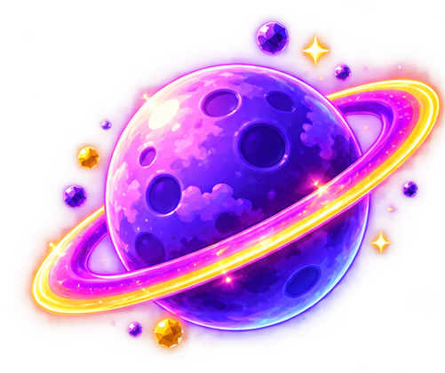
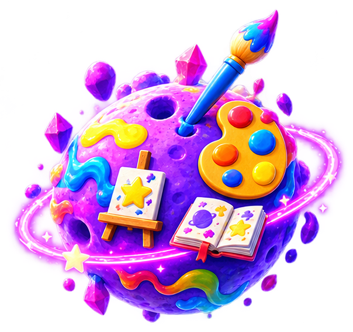

✦ 歡迎來到 ✦
每個孩子，都有一顆屬於自己的學習星球。
現在，就讓我們一起看看，你的孩子比較靠近哪一顆星？


▣ 沒有對錯，只要選出最像孩子的答案
✦ 探索完成 ✦
這是孩子的「初步探索結果」孩子的學習方式，還有更多面向值得了解！
✦ 從剛才的過程中，我們發現孩子可能特別靠近：✦
還有一份專屬學習書依照孩子的學習星，我們準備了一本專屬學習書。
🔒 完整報告將由專人親自為您說明
🎁 解鎖孩子的
留下資料後，我們將送您：
🛡️ 填寫並送出資料，即表示您同意由教育顧問致電聯絡。
謝謝您完成填寫！